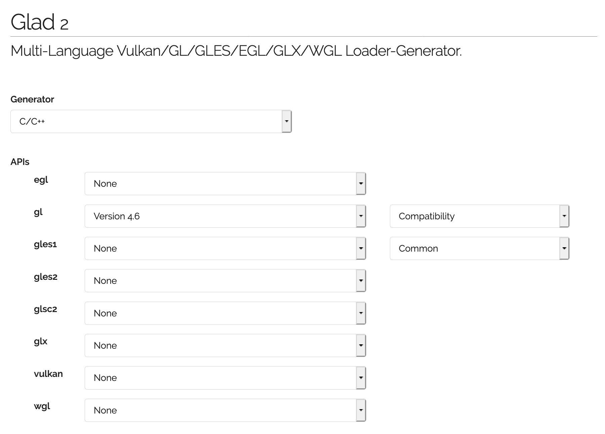
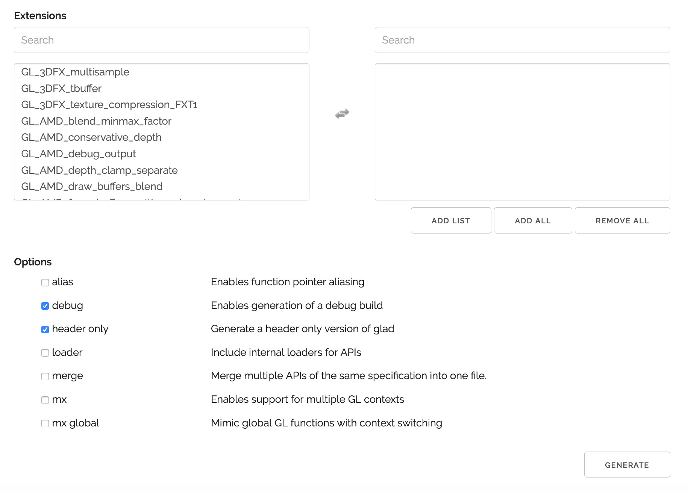
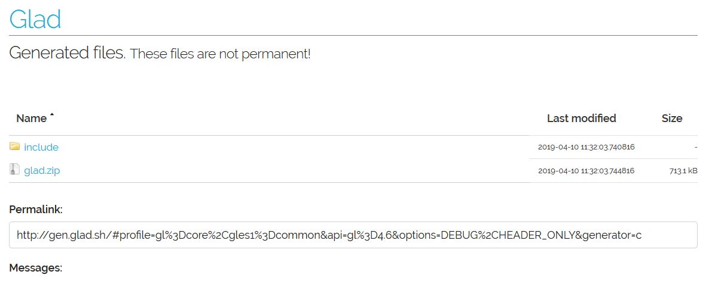

<!DOCTYPE html>
<!--[if IE 8]><html class="no-js lt-ie9" lang="jp" > <![endif]-->
<!--[if gt IE 8]><!--> <html class="no-js" lang="jp" > <!--<![endif]-->
<head>
  <meta charset="utf-8">
  
  <meta name="viewport" content="width=device-width, initial-scale=1.0">
  
  <title>1.3. OpenGL 3.x/4.xのローダとGLMの設定 &mdash; OpenGLCourseJP 0.1.0 documentation</title>
  

  
  
  
  

  
  <script type="text/javascript" src="../../_static/js/modernizr.min.js"></script>
  
    
      <script type="text/javascript" id="documentation_options" data-url_root="../../" src="../../_static/documentation_options.js"></script>
        <script type="text/javascript" src="../../_static/jquery.js"></script>
        <script type="text/javascript" src="../../_static/underscore.js"></script>
        <script type="text/javascript" src="../../_static/doctools.js"></script>
        <script type="text/javascript" src="../../_static/language_data.js"></script>
        <script async="async" type="text/javascript" src="https://cdnjs.cloudflare.com/ajax/libs/mathjax/2.7.5/latest.js?config=TeX-AMS-MML_HTMLorMML"></script>
    
    <script type="text/javascript" src="../../_static/js/theme.js"></script>

    

  
  <link rel="stylesheet" href="../../_static/css/theme.css" type="text/css" />
  <link rel="stylesheet" href="../../_static/pygments.css" type="text/css" />
    <link rel="index" title="Index" href="../../genindex.html" />
    <link rel="search" title="Search" href="../../search.html" />
    <link rel="next" title="2. ウィンドウを開く" href="../open_window/index.html" />
    <link rel="prev" title="1.2. GLMのインストール" href="glm.html" /> 
</head>

<body class="wy-body-for-nav">

   
  <div class="wy-grid-for-nav">
    
    <nav data-toggle="wy-nav-shift" class="wy-nav-side">
      <div class="wy-side-scroll">
        <div class="wy-side-nav-search" >
          

          
            <a href="../../index.html" class="icon icon-home"> OpenGLCourseJP
          

          
          </a>

          
            
            
              <div class="version">
                0.1.0
              </div>
            
          

          
<div role="search">
  <form id="rtd-search-form" class="wy-form" action="../../search.html" method="get">
    <input type="text" name="q" placeholder="Search docs" />
    <input type="hidden" name="check_keywords" value="yes" />
    <input type="hidden" name="area" value="default" />
  </form>
</div>

          
        </div>

        <div class="wy-menu wy-menu-vertical" data-spy="affix" role="navigation" aria-label="main navigation">
          
            
            
              
            
            
              <ul class="current">
<li class="toctree-l1 current"><a class="reference internal" href="index.html">1. 環境設定</a><ul class="current">
<li class="toctree-l2"><a class="reference internal" href="glfw.html">1.1. GLFWの設定 (初回の設定)</a></li>
<li class="toctree-l2"><a class="reference internal" href="glm.html">1.2. GLMのインストール</a></li>
<li class="toctree-l2 current"><a class="current reference internal" href="#">1.3. OpenGL 3.x/4.xのローダとGLMの設定</a><ul>
<li class="toctree-l3"><a class="reference internal" href="#glad-windows-mac">GLADのインストール (Windows/Mac共通)</a></li>
<li class="toctree-l3"><a class="reference internal" href="#id1">サンプルプログラムの実行</a><ul>
<li class="toctree-l4"><a class="reference internal" href="#id2">プログラムの変更点①</a></li>
<li class="toctree-l4"><a class="reference internal" href="#id3">プログラムの変更点②</a></li>
<li class="toctree-l4"><a class="reference internal" href="#id4">プログラムの実行</a></li>
</ul>
</li>
</ul>
</li>
</ul>
</li>
<li class="toctree-l1"><a class="reference internal" href="../open_window/index.html">2. ウィンドウを開く </a></li>
<li class="toctree-l1"><a class="reference internal" href="../hello_triangle/index.html">3. 三角形を描く </a></li>
<li class="toctree-l1"><a class="reference internal" href="../coord_transform/index.html">4. 座標変換 </a></li>
<li class="toctree-l1"><a class="reference internal" href="../depth_test/index.html">5. 深度テスト </a></li>
<li class="toctree-l1"><a class="reference internal" href="../window_resize/index.html">6. ウィンドウサイズの変更 </a></li>
<li class="toctree-l1"><a class="reference internal" href="../animation/index.html">7. アニメーション </a></li>
<li class="toctree-l1"><a class="reference internal" href="../texture_mapping/index.html">8. テクスチャ・マッピング </a></li>
<li class="toctree-l1"><a class="reference internal" href="../alpha_blending/index.html">9. アルファ合成 </a></li>
<li class="toctree-l1"><a class="reference internal" href="../vertex_buffer/index.html">10. 頂点バッファ </a></li>
<li class="toctree-l1"><a class="reference internal" href="../hello_shader/index.html">11. シェーダの利用 </a></li>
<li class="toctree-l1"><a class="reference internal" href="../model_loading/index.html">12. モデルファイルのロード </a></li>
<li class="toctree-l1"><a class="reference internal" href="../shading_models/index.html">13. 様々なシェーディングモデル </a></li>
<li class="toctree-l1"><a class="reference internal" href="../npr_shading/index.html">14. 非写実的シェーディング </a></li>
<li class="toctree-l1"><a class="reference internal" href="../keyboard_and_mouse/index.html">15. キーボードとマウスの操作 </a></li>
<li class="toctree-l1"><a class="reference internal" href="../object_selection/index.html">16. オブジェクトの選択 </a></li>
<li class="toctree-l1"><a class="reference internal" href="../arcball_control/index.html">17. アークボール操作 </a></li>
<li class="toctree-l1"><a class="reference internal" href="../framebuffer/index.html">18. フレームバッファ・オブジェクト </a></li>
<li class="toctree-l1"><a class="reference internal" href="../wave_equation/index.html">19. 流体の可視化 </a></li>
<li class="toctree-l1"><a class="reference internal" href="../shooting_game/index.html">20. シューティングゲーム </a></li>
</ul>

            
          
        </div>
      </div>
    </nav>

    <section data-toggle="wy-nav-shift" class="wy-nav-content-wrap">

      
      <nav class="wy-nav-top" aria-label="top navigation">
        
          <i data-toggle="wy-nav-top" class="fa fa-bars"></i>
          <a href="../../index.html">OpenGLCourseJP</a>
        
      </nav>


      <div class="wy-nav-content">
        
        <div class="rst-content">
        
          


<div role="navigation" aria-label="breadcrumbs navigation">

  <ul class="wy-breadcrumbs">
    
      <li><a href="../../index.html">Docs</a> &raquo;</li>
        
          <li><a href="index.html">1. 環境設定</a> &raquo;</li>
        
      <li>1.3. OpenGL 3.x/4.xのローダとGLMの設定</li>
    
    
      <li class="wy-breadcrumbs-aside">
        
            
            
              <a href="https://github.com///blob/sections/setup/glad.rst" class="fa fa-github"> Edit on GitHub</a>
            
          
        
      </li>
    
  </ul>

  
  <hr/>
</div>
          <div role="main" class="document" itemscope="itemscope" itemtype="http://schema.org/Article">
           <div itemprop="articleBody">
            
  <div class="section" id="opengl-3-x-4-xglm">
<h1>1.3. OpenGL 3.x/4.xのローダとGLMの設定<a class="headerlink" href="#opengl-3-x-4-xglm" title="Permalink to this headline">¶</a></h1>
<p>(この内容は「 <a class="reference internal" href="../hello_shader/index.html"><span class="doc">シェーダの利用 </span></a> 」以降に必要になります)</p>
<p>第10回以降のプログラムを動かすためには、比較的新しいOpenGLの機能を使うためのライブラリが必要です。
旧来はGLEW (OpenGL Extension Wrangler Library) というライブラリが有名でしたが、近年は開発が止まっていることもあり、本講義では <a class="reference external" href="https://gen.glad.sh/">GLAD</a> というライブラリを使います。</p>
<p>GLADはソースコード (*.c ファイル) を含むものとヘッダだけで利用できるものがあり、本講義では利便性のためにヘッダだけからなるものを用います。このヘッダは、講義のソースコードを配布している <a class="reference external" href="https://github.com/tatsy/OpenGLCourseJP/support/glad/glad.h">GitHub</a> からダウンロードできる他、 <a class="reference external" href="https://gen.glad.sh/">公式のWebページ</a> に設定内容を入力してダウンロードすることもできます。</p>
<div class="section" id="glad-windows-mac">
<h2>GLADのインストール (Windows/Mac共通)<a class="headerlink" href="#glad-windows-mac" title="Permalink to this headline">¶</a></h2>
<p>公式ページ (<a class="reference external" href="https://gen.glad.sh/">https://gen.glad.sh/</a>) にアクセスします。GLADにはバージョン1とバージョン2がありますが、ヘッダだけで利用できるバージョン2を今回は使います。</p>
<p>ページが開いたら下の画像のように設定項目を入力し、右下にある「GENERATE」ボタンをクリックします。</p>


<p>すると下記のような画面が開くので <code class="docutils literal notranslate"><span class="pre">glad.zip</span></code> をクリックして、ファイルをダウンロードします。</p>

<p>このファイルを展開すると <code class="docutils literal notranslate"><span class="pre">glad/gl.h</span></code> というファイルが見つかりますので、これを適当な場所におき、自分のソースコードからインクルードするようにします。</p>
</div>
<div class="section" id="id1">
<h2>サンプルプログラムの実行<a class="headerlink" href="#id1" title="Permalink to this headline">¶</a></h2>
<p>サンプルプログラムは「第12回シェーダの利用」のソースコードを使用します。</p>
<p><a class="reference external" href="https://github.com/tatsy/OpenGLCourseJP/blob/master/src/hello_shader">https://github.com/tatsy/OpenGLCourseJP/blob/master/src/hello_shader</a></p>
<p>コンパイルをするまではこれまで通りですが、今回のファイルにはシェーダのソースコードが含まれるので、
そちらの置き場所を別途設定する必要があります。</p>
<p>サンプルプログラムの中では、 <strong>common.h</strong> というシェーダの置き場所を記したヘッダファイルを
<strong>CMake</strong> を使用して自動生成しています。その元となるファイルが <strong>common.h.in</strong> です。</p>
<p><strong>CMake</strong> を使わずに、このファイルを作る場合には、<strong>common.h.in</strong> の内容を参考に
以下のような内容を記述したファイルを作ってください。もしMacをお使いで上記の「Copy Files」の設定をした方は、こちらをスキップしても大丈夫です。</p>
<div class="highlight-cpp notranslate"><table class="highlighttable"><tr><td class="linenos"><div class="linenodiv"><pre>1
2
3
4
5
6
7
8</pre></div></td><td class="code"><div class="highlight"><pre><span></span><span class="cp">#ifndef _COMMON_H_</span>
<span class="cp">#define _COMMON_H_</span>

<span class="k">static</span> <span class="k">const</span> <span class="kt">char</span> <span class="o">*</span><span class="n">SOURCE_DIRECTORY</span> <span class="o">=</span> <span class="s">&quot;(ソースコード用のディレクトリ)&quot;</span><span class="p">;</span>
<span class="k">static</span> <span class="k">const</span> <span class="kt">char</span> <span class="o">*</span><span class="n">SHADER_DIRECTORY</span> <span class="o">=</span> <span class="s">&quot;(シェーダ用のディレクトリ)&quot;</span><span class="p">;</span>
<span class="k">static</span> <span class="k">const</span> <span class="kt">char</span> <span class="o">*</span><span class="n">DATA_DIRECTORY</span> <span class="o">=</span> <span class="s">&quot;(データ用のディレクトリ)&quot;</span><span class="p">;</span>

<span class="cp">#endif  </span><span class="c1">// _COMMON_H_</span>
</pre></div>
</td></tr></table></div>
<p>サンプルプログラムでは、シェーダのファイルが見つからなければエラーを返すように
していますので、もし実行が上手くいかない場合にはシェーダの置き場所を確認してみてください。</p>
<div class="section" id="id2">
<h3>プログラムの変更点①<a class="headerlink" href="#id2" title="Permalink to this headline">¶</a></h3>
<p>一つ目は使用するOpenGLの種類の設定です。設定項目としては、</p>
<ol class="arabic simple">
<li><p>GLFWにOpenGLのバージョンを指定する</p></li>
<li><p>GLFWにOpenGLのプロファイルの種類を指定する</p></li>
<li><p>GLFWにOpenGLの互換性を指定する</p></li>
</ol>
<p>これらは以下のように設定できます。</p>
<div class="highlight-cpp notranslate"><table class="highlighttable"><tr><td class="linenos"><div class="linenodiv"><pre>1
2
3
4
5
6</pre></div></td><td class="code"><div class="highlight"><pre><span></span><span class="c1">// OpenGLのバージョン設定 (4を指定すると4.xの中で使用可能なもののうち、最新のものが使われる)</span>
<span class="n">glfwWindowHint</span><span class="p">(</span><span class="n">GLFW_CONTEXT_VERSION_MAJOR</span><span class="p">,</span> <span class="mi">4</span><span class="p">);</span>
<span class="c1">// OpenGLのプロファイル (Core, Compatibility) を設定</span>
<span class="n">glfwWindowHint</span><span class="p">(</span><span class="n">GLFW_OPENGL_PROFILE</span><span class="p">,</span> <span class="n">GLFW_OPENGL_CORE_PROFILE</span><span class="p">);</span>
<span class="c1">// OpenGLの関数の新しい関数だけを使う場合は GL_TRUE を指定する (初期値は GL_FALSE)</span>
<span class="n">glfwWindowHint</span><span class="p">(</span><span class="n">GLFW_OPENGL_FORWARD_COMPAT</span><span class="p">,</span> <span class="n">GL_TRUE</span><span class="p">);</span>
</pre></div>
</td></tr></table></div>
<p>これらの項目はWindowsの場合には特に設定しなくても、最新バージョンのOpenGLでかつ、Compatibility profileを使い、古い関数もサポートする形で初期化されます。一方でMacの場合には、上記の設定をしない場合には、OpenGL 2.1の機能までしか使えないため、設定は必須になります。さらにMacではCore profileのみがサポートされているため、上記の三項目の設定が必要になります。</p>
</div>
<div class="section" id="id3">
<h3>プログラムの変更点②<a class="headerlink" href="#id3" title="Permalink to this headline">¶</a></h3>
<p>上記の設定後、OpenGLのライブラリをロードするコードを追加します。具体的には <code class="docutils literal notranslate"><span class="pre">glfwMakeContextCurrent</span></code> を呼び出しの下に以下のコードを追加します。</p>
<div class="highlight-cpp notranslate"><table class="highlighttable"><tr><td class="linenos"><div class="linenodiv"><pre>1
2
3
4
5
6
7
8
9</pre></div></td><td class="code"><div class="highlight"><pre><span></span><span class="c1">// OpenGL 3.x/4.xの関数をロードする (glfwMakeContextCurrentの後でないといけない)</span>
<span class="k">const</span> <span class="kt">int</span> <span class="n">version</span> <span class="o">=</span> <span class="n">gladLoadGL</span><span class="p">(</span><span class="n">glfwGetProcAddress</span><span class="p">);</span>
<span class="k">if</span> <span class="p">(</span><span class="n">version</span> <span class="o">==</span> <span class="mi">0</span><span class="p">)</span> <span class="p">{</span>
    <span class="n">fprintf</span><span class="p">(</span><span class="n">stderr</span><span class="p">,</span> <span class="s">&quot;Failed to load OpenGL 3.x/4.x libraries!</span><span class="se">\n</span><span class="s">&quot;</span><span class="p">);</span>
    <span class="k">return</span> <span class="mi">1</span><span class="p">;</span>
<span class="p">}</span>

<span class="c1">// バージョンを出力する</span>
<span class="n">printf</span><span class="p">(</span><span class="s">&quot;Load OpenGL %d.%d</span><span class="se">\n</span><span class="s">&quot;</span><span class="p">,</span> <span class="n">GLAD_VERSION_MAJOR</span><span class="p">(</span><span class="n">version</span><span class="p">),</span> <span class="n">GLAD_VERSION_MINOR</span><span class="p">(</span><span class="n">version</span><span class="p">));</span>
</pre></div>
</td></tr></table></div>
<p><code class="docutils literal notranslate"><span class="pre">gladLoadGL</span></code> 関数はライブラリの読み込みに成功するとOpenGLのバージョンを表す5桁の整数を返してします (OpenGL 4.5なら40005)。もし読み込みに失敗した場合には <code class="docutils literal notranslate"><span class="pre">0</span></code> が返ってくるので、これを使って読み込みに成功したかどうかを確認しています。</p>
<p>またその下の <code class="docutils literal notranslate"><span class="pre">printf</span></code> では、実際に期待するバージョンのライブラリが読み込めているかどうかを確認しています。特にMacの場合には設定が正しく行えていない場合にバージョン2.1が読み込まれるので注意してください。</p>
</div>
<div class="section" id="id4">
<h3>プログラムの実行<a class="headerlink" href="#id4" title="Permalink to this headline">¶</a></h3>
<p>実際にプログラムをビルドして実行結果を確認してください。</p>
<p>上手く実行できると、色付きの立方体が描画されるはずです。</p>
<a class="reference internal image-reference" href="../../_images/shader_cube.jpg"></a>
</div>
</div>
</div>


           </div>
           
          </div>
          <footer>
  
    <div class="rst-footer-buttons" role="navigation" aria-label="footer navigation">
      
        <a href="../open_window/index.html" class="btn btn-neutral float-right" title="2. ウィンドウを開く" accesskey="n" rel="next">Next <span class="fa fa-arrow-circle-right"></span></a>
      
      
        <a href="glm.html" class="btn btn-neutral float-left" title="1.2. GLMのインストール" accesskey="p" rel="prev"><span class="fa fa-arrow-circle-left"></span> Previous</a>
      
    </div>
  

  <hr/>

  <div role="contentinfo">
    <p>
        &copy; Copyright 2017, Tatsuya Yatagawa

    </p>
  </div>
  Built with <a href="http://sphinx-doc.org/">Sphinx</a> using a <a href="https://github.com/rtfd/sphinx_rtd_theme">theme</a> provided by <a href="https://readthedocs.org">Read the Docs</a>. 

</footer>

        </div>
      </div>

    </section>

  </div>
  


  <script type="text/javascript">
      jQuery(function () {
          SphinxRtdTheme.Navigation.enable(true);
      });
  </script>

  
  
    
   

</body>
</html>